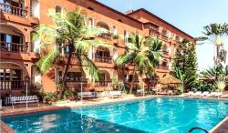
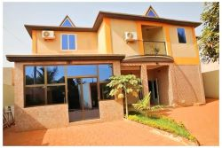
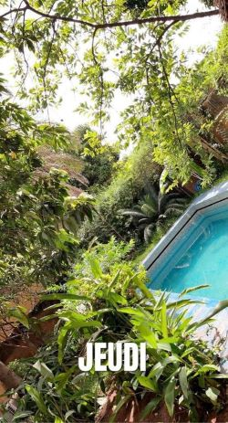
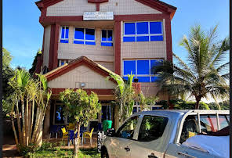

Les Meilleurs Hotels Des La ville De Bobo Dioulasso
Quelques images des meilleurs hotels pour un bon séjour dans la ville de Bobo Dioulasso
Cliquez Sur l'image De Votre Choix Pour passer a la reservation de votre Hotel

Hôtel L'Auberge
Situé à Bobo-Dioulasso, l'Hôtel L'Auberge propose une piscine extérieure, une salle de sport, un jardin et un salon commun. Doté d'une terrasse, cet hôtel 3 étoiles propose des chambres climatisées avec connexion Wi-Fi gratuite et salle de bains privative. Vous bénéficierez gratuitement d'un parking privé et d'un service de navette aéroport.
Toutes les chambres comprennent une armoire. Les chambres sont équipées d'un bureau et d'une télévision à écran plat. Certaines possèdent un balcon. Le linge de lit et les serviettes sont fournis.
Un petit-déjeuner continental est servi tous les matins sur place. Le restaurant de l'hôtel sert une cuisine africaine, italienne et du Moyen-Orient. Des plats végétariens et végétaliens sont également disponibles sur demande.

Oasis Lawafossi
Situé à Bobo-Dioulasso, l'Oasis Lawafossi propose des hébergements avec une terrasse ou un balcon, une connexion Wi-Fi gratuite, une télévision à écran plat et un bar.
La salle de bains privative est pourvue d'un bidet et d'articles de toilette gratuits.
Un service de location de voitures est assuré sur place.
L'aéroport Bobo Dioulasso, le plus proche, est implanté à 4 km

Villa Bobo
Bénéficiant d'un jardin, la Villa Bobo est située à Bobo-Dioulasso. Vous profiterez d'une réception ouverte 24h/24, d'une piscine et d'une connexion Wi-Fi gratuite dans tout l'établissement.
Les chambres de ce Bed & Breakfast sont toutes dotées d'un bureau. Chacune dispose d'une salle de bains privative et certaines offrent une vue sur la piscine. Les logements sont également équipés d'un réfrigérateur et de la climatisation.
Un petit-déjeuner italien est servi tous les matins sur place.

Pacific Hôtel BOBO
Situé à Bobo-Dioulasso, Pacific Hôtel BOBO propose des hébergements avec une terrasse ou un balcon, une connexion Wi-Fi gratuite, une télévision à écran plat et un bar.
La salle de bains privative est pourvue d'un bidet et d'articles de toilette gratuits.
Un service de location de voitures est assuré sur place.
L'aéroport Bobo Dioulasso, le plus proche, est implanté à 4 km